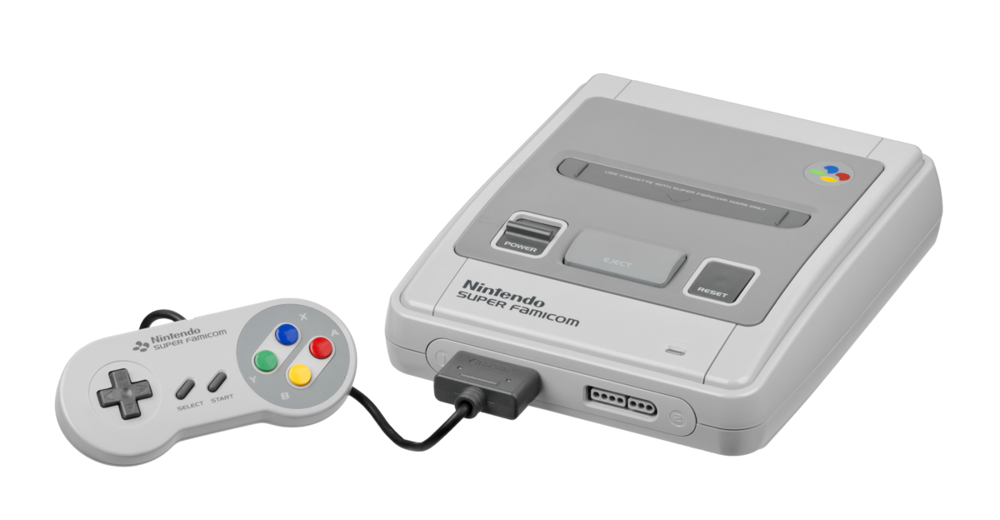

The Greatest Console Of All Time?
What is it about the SNES that has made it so fondly remembered among people of a certain age? Whenever there is talk of the greatest consoles of all time, the SNES inevitably rears its head. To this day, many people argue that the SNES is the greatest console of all time, and that the SNES entries in Mario, Zelda and Metroid franchises are the best entries in their series. It's entirely subjective, but there's no denying that it's a charming little machines with some of the finest 2D games ever crafted. It's predecessor, the NES basically introduced console gaming as we know it. Sure, the ATARI 2600 came first, but it didn't quite capture people's hearts like the NES did. While the ATARI had some great games, what Ninetendo did with the NES was introduce fantasy to gaming. Foremost in the evergreen Mario and Zelda titles. which 30 years later, while not quite as compelling as they were in 1986, are still good fun. Something you can't quite say about early 80s Atari titles.

The original Super Mario Bros. Still very playable, but undoubtedly showing it's age.
Super Mario World, arguably the greatest console pack in title ever! A mammoth platformer with 96 exits to find (not 96 levels as often reported, though there are a lot of levels!).
Some Background
The SNES though, introduced in 1990 in Nintendo'd native Japan, and in 1991 in America and Europe, took some classic franchises that debuted on the NES added layers of complexity and depth, and created some timeless classics. While Super Mario Bros and The Legend of Zelda may still be solid, playable titles, they have obviously aged. Super Mario World and The Legend of Zelda: A Link To The Past however, look and play just as great today as they did when they were first released.
The original Legend of Zelda. It may not look like much, but it cemented a formula that Nintendo would use for over 30 years, finally abandoning in 2017's sublime Breath of the Wild.
Link to the Past, a game that arguably perfected the 2D overhead Zelda formula, phenomonal music too!
The hardware
Part of this comes down the the graphical improvement. The 8 bit NES had a much more limited colour palette of just 64 colours displayed on screen at once when compared to the SNES 256. The SNES was also capable of displaying more on screen sprites at once thanks to its 16 bit picture processing Unit (PPU), up t0 128,or 32 per scanline. The SNES was held back by a comparitively slow CPU, clocked at 3.58 MHz, which often resulted in rival Sega Megadrive's games running faster than SNES equivalents.
The cute Japanese and European model with the coloured convex face buttons
The SNES came in two different form factors. The first being the cute, rounded Japanese/european model with the red, blue, green and yellow coloured face buttons. The second being the boxy, industrial looking US model with lavander convex and concave face buttons. Ithink most people would agree that the Japanese and European model looks much nicer! The European model unfortiunately is PAL, and thus runs slower than the US and Japanese models, so ultimately is probably the worst way to experience these classic titles.
The ugly American redesign of the SNES, if you're wondering why they went with such a horrendous design and colour scheme, you can read about it here Home Consoles
While NES games, and especially Atari games often required a little imagination to immerse yourself fully in the experience, SNES games required no such mental interpolation. SNES games were bright, colourful and had wonderful sound. No longer did players have to supsend their disbelief, but instead engaged with absorbing, immersive experienecs, of which Super Metroid may be the pinnacle example. In fact, this was not unlike the jump from Playstation to Playstation 2, when blocky, low poly environments and character models gave way to truly beautiful and far more convincing 3D games
The Controller
Another factor that allowed SNES games to deliver more complex and immersive experineces was the SNES controller. The NES contrllers was wonderfully innovative for its time, introducing the world to the now industry standard D Pad. But having just two face buttons often meant quite limited input options. The NES doubled the face buttons to four and introduced the world to shoulder buttons, giving a total of 6 action buttons, in addition to the D Pad and Start and Select. This allower for more complex control over character movement, moves equippable weapons, items, tools and more.